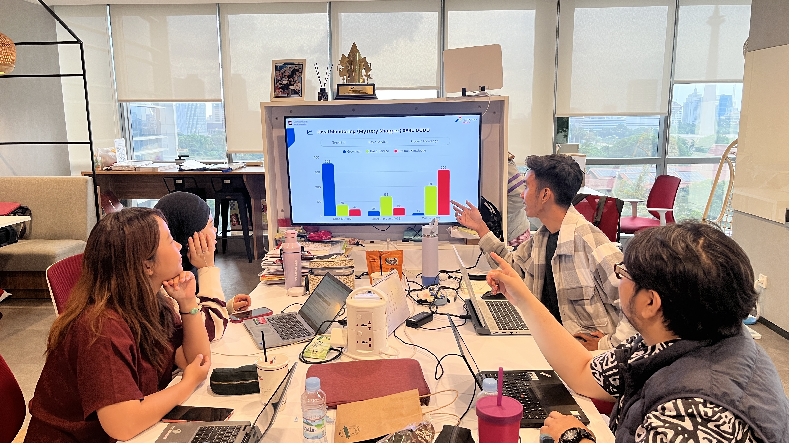
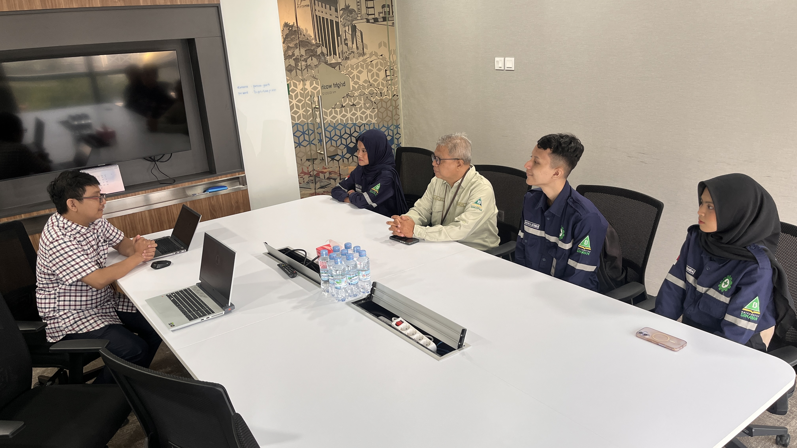
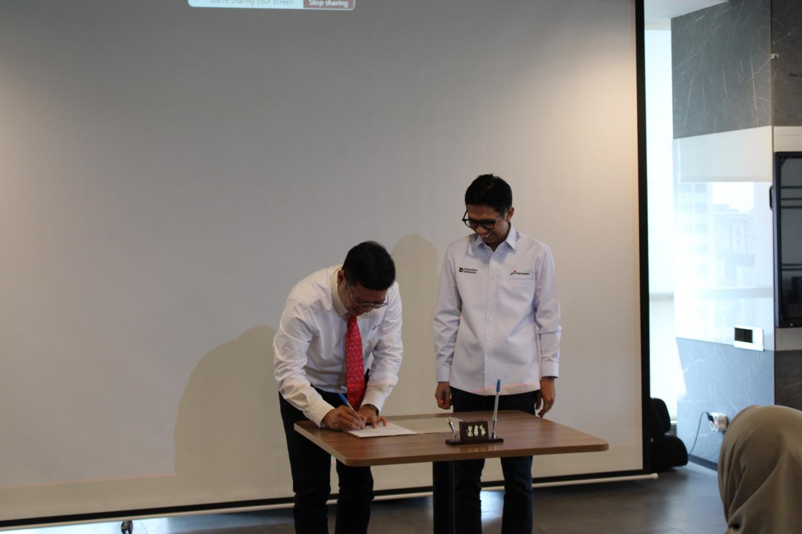
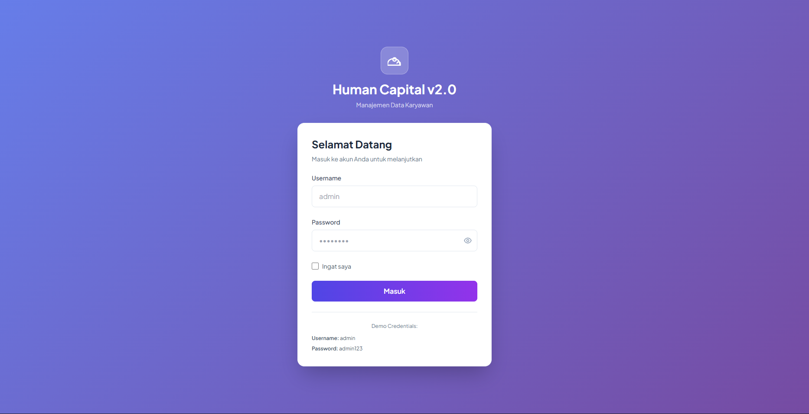

Human Capital / Web Development
Internal Talent Requirement Management (TRM)
Tools & Skills: HTML, Tailwind CSS, Vercel, UI Design, Web Development, Business Requirements Analysis, Stakeholder Collaboration
An internal web application prototype developed to help the Human Capital team manage candidate records more efficiently by replacing manual Excel-based searching with a more structured and accessible interface.
Key Contributions
- Translated HC team pain points in manual Excel-based candidate searches into practical website features.
- Independently handled the project from interface design and coding to deployment on Vercel.
- Developed core modules including CV Library, Work History, and CV Review.
- Structured a workflow for login, Excel database upload, and monitoring of candidate information.
- Addressed template standardization and large data volume through stakeholder discussions and iterative feedback.
System Development & Data Management
Previously, candidate records were stored across multiple Excel sheets, making searches slow and less structured. The TRM web application reorganized this process into a cleaner digital interface to support easier access, review, and monitoring of candidate information by the Human Capital team.
Stakeholder Collaboration & Development
Worked closely with the Human Capital team to understand operational needs, refine feature requirements, and gather feedback throughout development. The application remained in further development when the internship period ended, but the resulting prototype already offered a more structured search experience than the previous Excel-based process.
Project Moments

Intern Recruitment Session

Role Handover Session

Talent Requirement Management System


Like what you see?
Let’s get started!
Hire Me
For Your Team!